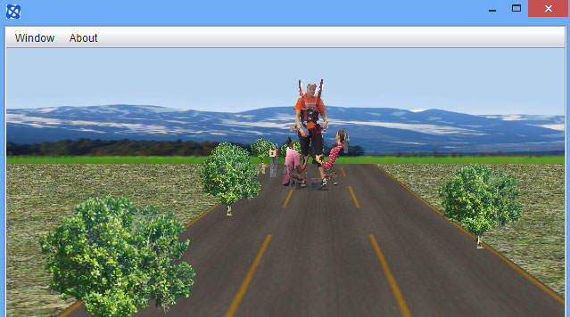
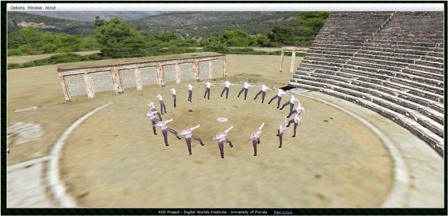
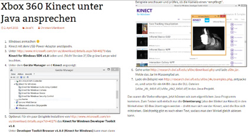
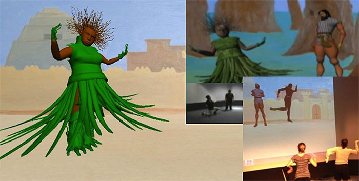
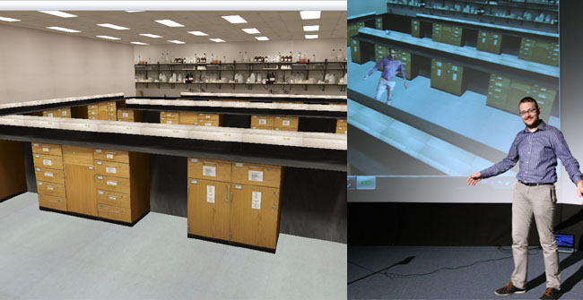

UFDW Java library
J4K Java library
J4KSDK.class API
DepthMap.class API
Skeleton.class API
VideoFrame.class API
Source Code Examples
SimpleExample
VideoViewerApp
KinectViewerApp
AugmentedRealityApp
ImageAvatarApp
XEDConvertApp
MultipleKinectApp
J4K Projects Gallery
Published Papers
Download
Install in Eclipse
Watch video tutorial
People
Frequently Asked Questions
J4K Java library
J4KSDK.class API
DepthMap.class API
Skeleton.class API
VideoFrame.class API
Source Code Examples
SimpleExample
VideoViewerApp
KinectViewerApp
AugmentedRealityApp
ImageAvatarApp
XEDConvertApp
MultipleKinectApp
J4K Projects Gallery
Published Papers
Download
Install in Eclipse
Watch video tutorial
People
Frequently Asked Questions
J4K Projects Gallery
This is a showcase of various research projects that used the J4K Java library for Kinect. The projects cover a wide range of topics including real-time 3D body reconstruction, platform for spinal cord injury rehabilitation, virtual classrooms for distance learning, reconstruction of classical dramatic performances, human-computer interaction, and others. If you want your project to be included in this gallery, please contact Prof. Angelos Barmpoutis.
How to give embodied PowerPoint presentations using Kinect
This project used the J4K library version 0.9.15 (April 2013).
For information regarding this project contact the Principal Investigator, Angelos Barmpoutis.
Real-time 3D body reconstruction and avatar synthesis
This project used the J4K library version 0.9.12 (February 2013).
More information about this project can be found in the following articles:
A. Barmpoutis. 'Tensor Body: Real-time Reconstruction of the Human Body and Avatar Synthesis from RGB-D', IEEE Transactions on Cybernetics, Special issue on Computer Vision for RGB-D Sensors: Kinect and Its Applications, October 2013, Vol. 43(5), Pages: 1347-1356. Download PDF - Kinect Avatars paper
A. Barmpoutis. 'Automated Human Avatar Synthesis for Obesity Control using Low-Cost Depth Cameras', Studies in Health Technology and Informatics, February 2013, Vol. 184, Pages: 36-42.
Virtual distance learning classroom using Kinect
This project used the J4K library version 0.8.1 (November 2011).
This project has been funded in part by the University of Florida office of CIO.
Investigating the effect of drivers' body motion on traffic safety
This project used the J4K library version 1.0.0 (September 2013).
More information about this project can be found in the website of the project:
http://research.dwi.ufl.edu/dmddb/
and the article:
A. Kondyli, V. Sisiopikou, A. Barmpoutis. 'A 3D experimental framework for exploring drivers' body activity using infrared depth sensors', In Proceedings of the IEEE International Conference on Connected Vehicles, December 2013.
This project has been funded by the US Department of Transportation / STRIDE, Award: 2013-051S.
Game technology to enhance sensory input and promote walking recovery
This project used the J4K library version 1.0.0 (September 2013).

This project has been funded in part by the US National Institutes of Health / UF Clinical and Translational Science Institute. For information regarding this project, contact the principal investigator, Dr. Emily Fox or consult the following article:
A. Barmpoutis et al. 'Augmented-reality environment for locomotor training in children with neurological injuries', In LNCS 8678 (Springer) Proceedings of MICCAI14 - Workshop on Augmented Environments for Computed Assisted Interventions: (ed. C.A. Linte, Z. Yaniv, P. Fallavollita, P. Abolmaesumi, and D. R. Holmes III), September 2014. [Link]
Kinect Blender Addon for Cutout Animation
This project used the J4K library version 2.0.0 (November 2015).
An addon for blender to record and load animations for cutout characters. It uses j4k and OSC to send skeleton information to blender game engine and writes the keyframes in a file. Loading the file into blender will load the keyframe for each skeleton recorded. A readme containing the instructions is provided.
Download the plugin and read more details at this blog: blenderartists.org.
For more information about this project contact FBHaueisen.
Simulating the circumstances of performance of classical drama
This project used the J4K library version 0.8.1 (November 2011).

For more information regarding this project, contact the principal investigator, Dr. Eleni Bozia.
Robot Controller with Kinect
This project used the J4K library version 2.0.0 (July 2015).
For more information about this project contact EastbulletdotCom.
Paint API for Kinect
This project used the J4K library version 1.0.0 (October 2014).
For more information about this project contact BalticGamingTeam.
Moving mouse using hand gestures recognized by Kinect
This project used the J4K library version 2.0.0 (May 2015).
Read the source code and more details at this blog: JavaStart.pl.
For more information about this project contact JavaStart Blog.
Demonstration of live RGBD video
This demo used the J4K library for Processing 2.0+ (July 2014).
For more information about this video contact Scott Wittaker.
Tutorial on how to rotate a box with your body using Kinect
This project used the J4K library version 2.0.0 (April 2015).

Click on the image above to access the tutorial and the source code.
For more information about this project contact Christian Ullenboom.
Interactive Storytelling of Gilgamesh
This project used the J4K library version 0.5.0.

Details about this project can be found in the proceedings of the 13th Congress of the International Society of Ethnobiology. For more information regarding this project, contact the principal investigator, Elaine Sponholtz.
iLab - Experiential Learning Chemistry Lab
This project used the J4K library version 0.8.1 (November 2011).

For more information regarding this project, contact the principal investigator, Dr. Christos Lampropoulos.
Disclaimer: The names JAVA and KINECT and their associated logos are trademarks of their respective copyright owners Oracle and Microsoft. None of these companies endorse, fund, or are in any way associated with the J4K library.
Disclaimer: This software is provided for free without any warranty expressed or implied for academic, research, and strictly non commercial purposes only. By downloading this library you accept the Terms and Conditions.